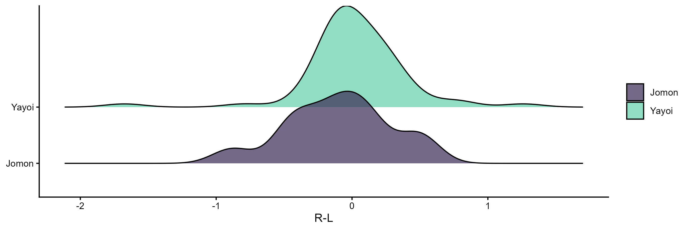
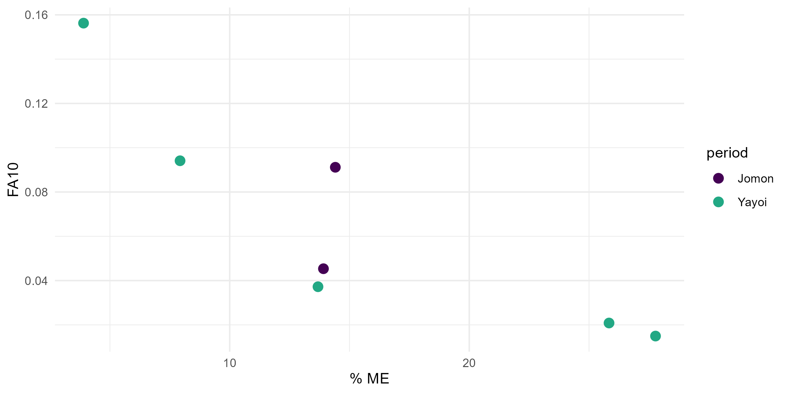

Resilience in prehistoric persistent hunter-gatherers in northwest Kyushu, Japan as assessed by population health and archaeological evidence
Executive Summary
Problem: Persistent hunter-gatherers – those who maintained foraging lifeways for centuries after the arrival of agriculture – are frequently dismissed in the literature as populations eking out a marginal existence on the ecological periphery. This framing denies them agency and ignores the possibility that persistence itself reflects resilience. Northwest Kyushu, Japan offers a critical test case: agricultural Yayoi populations arrived in the region around 500 BC, yet coastal Jomon hunter-gatherer communities persisted in parallel for at least 700 years, and possibly over a millennium. Did these populations experience a decline in population health as a consequence of agricultural expansion into their ecological and social world?
Approach: We examined two permanent biological markers of developmental stress – dental enamel hypoplasia and fluctuating dental asymmetry – in skeletal remains from six coastal shell midden sites in northwest Kyushu. Hypoplasia frequency and fluctuating asymmetry variance were compared between pre-agricultural Jomon and persistent Yayoi-period Jomon hunter-gatherers. The hypothesis was that developmental stress loads did not change over time. This revised analysis applies a more rigorous and fully reproducible pipeline than the original publication: hypoplasia is modeled as a rate with a tooth-count offset to account for differential preservation, and fluctuating asymmetry follows the complete Palmer and Strobeck (2003) protocol including measurement error screening, outlier detection, size dependency testing, ideal FA assessment, and ME-corrected FA10 index computation – all from raw data to results in R with no intermediate Excel processing.
Insights: No statistically significant differences in developmental stress were found between Jomon hunter-gatherers living before agricultural arrival and those living parallel to agricultural Yayoi populations. Hypoplasia rates and fluctuating asymmetry variance were consistent across periods. The biological evidence aligns with the archaeological record of cultural continuity, autonomous subsistence, and sustained marine resource use in northwest Kyushu across the Jomon-Yayoi transition.
Significance: Developmental stress markers in archaeological remains can serve as a proxy for population resilience when combined with archaeological evidence. The northwest Kyushu case demonstrates that persistent hunter-gatherers were not marginal populations in decline but maintained population health and adaptive capacity across centuries of major socio-ecological transformation. This has implications for how we interpret similar transitions in other world regions and for frameworks linking bioarchaeological data to resilience theory.
Key Findings
- Hypoplasia rate did not differ significantly between Jomon and persistent Yayoi-period hunter-gatherers (beta = 0.374, SE = 0.267, p = 0.17), with Levene’s test confirming homogeneity of variance prior to modeling (F = 0.20, p = 0.66, n = 53).
- Fluctuating asymmetry (FA10, ME-corrected) did not differ significantly between periods (Levene’s F = 1.73, df = 1,5, p = 0.25), with 7 traits passing the full Palmer-Strobeck screening protocol across both periods.
- Both measures were consistently elevated across periods, suggesting recurrent or chronic developmental stress – likely linked to parasitic load from marine resource exploitation – that was stable and did not increase with agricultural expansion into the region.
Hoover, K.C., Hudson, M.J. (2015). Resilience in prehistoric persistent hunter-gatherers in northwest Kyushu, Japan as assessed by population health and archaeological evidence. Quaternary International, 395, 1–12. DOI: 10.1016/j.quaint.2015.10.047
Research Question
Did persistent Jomon hunter-gatherers in northwest Kyushu experience a decline in population health – as measured by developmental stress markers – following the arrival of agricultural Yayoi populations in the region?
The hypothesis tested is that there is no statistically significant difference in developmental stress between pre-agricultural Jomon hunter-gatherers and persistent Jomon hunter-gatherers living parallel to but not adopting agriculture during the Yayoi period. A significant increase in developmental stress would indicate vulnerability and reduced resilience; no change would support the interpretation of resilience in the face of major socio-ecological disruption.
Research Answers
Dental Enamel Hypoplasia
Dental enamel hypoplasia – permanent lines, furrows, or pits on tooth crown surfaces caused by cessation of ameloblast activity during development – records episodes of nutritional stress or disease during childhood. Hypoplasia was measured across all teeth in the dental arcade for each individual, and the outcome variable is the rate of hypoplastic teeth per individual (hypoCount / nTeeth), which accounts for variation in the number of observable teeth due to differential preservation. A linear model with a tooth-count offset (log(nTeeth / 28)) was used to model hypoplasia rate by period.
Variance homogeneity was confirmed prior to modeling (Levene’s test: F = 0.20, df = 1,51, p = 0.66). The distribution of hypoplasia rate was approximately unimodal with a right tail, consistent across both periods.
Figure 1. (A) Overall distribution of hypoplasia rate across all individuals. Dashed line shows the overall mean (1.27). (B) Hypoplasia rate distributions by period (Jomon: purple; Yayoi: teal).
Interpretation: Both distributions are right-skewed with similar central tendencies. The Yayoi distribution is shifted slightly higher but the overlap between periods is substantial, consistent with no meaningful between-group difference. The elevated rates in both periods suggest chronic or recurrent developmental stress, likely attributable to parasitic load from marine resource exploitation rather than nutritional deficiency per se.
Period was not a significant predictor of hypoplasia rate (beta = 0.374, SE = 0.267, t = 1.40, p = 0.17; F(1,51) = 1.96, p = 0.167). The model explained little variance (R² = 0.037). Mean hypoplasia rate was 1.06 (Jomon) and 1.51 (Yayoi); the difference is not statistically significant.
Figure 2. Hypoplasia rate by period. Box shows interquartile range; points are individual values; diamond shows group mean.
Interpretation: The Yayoi group trends higher than Jomon but distributions overlap substantially and the difference is not significant. High hypoplasia rates in both groups reflect the consistently stressed developmental environment characteristic of these maritime populations – a pattern reported in other prehistoric Japanese samples.
Fluctuating Dental Asymmetry
Fluctuating asymmetry (FA) – random, non-directional deviations from bilateral symmetry in paired traits – reflects an individual’s ability to buffer development against environmental and physiological stress. Greater FA variance indicates greater developmental instability at the population level. Maximum mesiodistal and buccolingual crown diameters were measured for all observable permanent teeth (third molars excluded) following Seipel (1946) and Moorrees et al. (1957).
The full Palmer and Strobeck (2003) protocol was applied: measurement error outlier detection (Dixon’s test on consecutive replicate differences, Steps 1–2), FA outlier detection (Dixon’s test on signed R-L values, Steps 3–5), mixed-model Sides x Individuals ANOVA to confirm FA exceeds ME variance (Step 6), ME variance Levene test (Step 7), size dependency screening (Spearman correlation of |R-L| vs (R+L)/2, Step 8), and ideal FA assessment for directional asymmetry, skew, and kurtosis (Step 9). No ln transformation was required (Step 8: no significant positive size dependency). No traits showed significant directional asymmetry. Two Yayoi traits (xli2, xlm1) were eliminated for significant kurtosis and skew.
Seven traits passed all screening steps and were retained for hypothesis testing: mlm2 and xbi1 (Jomon); xbi2, xbc, xbm1, xbi1, and xbp1 (Yayoi). The ME-corrected FA10 index was computed for each retained trait per period.
The distribution of FA10 R-L differences was approximately centred on zero in both periods prior to hypothesis testing, confirming the data met the expectation of fluctuating (non-directional) asymmetry.
Figure 3. Distribution of signed R-L side differences by period prior to hypothesis testing. Both distributions are approximately centred on zero.

Interpretation: Distributions centred near zero confirm that the asymmetry measured is fluctuating rather than directional in both periods. The Yayoi distribution is tighter, consistent with the larger Yayoi sample providing more stable estimates.
The FA10 index values and their associated measurement error fractions varied across traits and periods.
Figure 4. FA10 index value by percent measurement error, colored by trait. Traits with higher % ME had a larger fraction of apparent FA attributable to measurement error; the ME-corrected FA10 index removes this contribution.

Interpretation: Traits with higher % ME (xbi1 Yayoi: 25.8%; xbp1: 27.8%) had a larger proportion of apparent FA attributable to measurement error, but the ME-corrected FA10 index used for hypothesis testing removes this contribution. The remaining variance reflects true biological asymmetry. Trait mlm2 (Jomon mandibular second molar mesiodistal length) showed the highest FA10 value (0.091), while xbp1 (Yayoi maxillary first premolar buccolingual breadth) showed the lowest (0.015).
Levene’s test for homogeneity of FA10 variance between periods found no significant difference (F = 1.73, df = 1,5, p = 0.25). The hypothesis of no difference in developmental instability between periods is supported.
Study Design
Three methodological departures from the published paper:
- Hypoplasia: rate only (hypoCount / nTeeth) modeled with a tooth-count offset – the paper tested presence/absence and count; rate with offset is more appropriate given differential preservation across individuals.
- Fluctuating asymmetry: full Palmer-Strobeck protocol applied end-to-end – the paper used a simplified index; the full protocol with ME screening, outlier detection, size dependency testing, and ideal FA assessment is more rigorous and arrives at the same conclusion.
- Pipeline: raw data to results entirely in R – the original analysis involved intermediate Excel processing steps; this pipeline is fully reproducible from the raw Excel source file.
Data Source: Skeletal remains (n = 92 crania) from six coastal shell midden sites in northwest Kyushu, Japan, stored at Nagasaki University. Collected by K.C. Hoover during four weeks of fieldwork. Raw data in raw-nagasaki-18July13.xlsx.
Data Handling: Sites pooled into two analytical groups by archaeological period: Jomon (pre-agricultural) and Yayoi (persistent hunter-gatherers living parallel to but not adopting agriculture). Individuals associated with evidence of wet-rice agriculture were excluded. For hypoplasia: teeth with insufficient crown preservation excluded; 6 individuals with no observable nTeeth excluded from rate modeling. For FA: third molars excluded; individuals required fully emerged permanent crowns with wear not precluding maximum crown dimension measurement; minimum 2 paired replicates required per individual x trait combination.
Analytical Approach:
- Hypoplasia wrangling: tooth-level data read from raw Excel, teeth renamed by dental position using a universal numbering map, zero values recoded as NA, hypoplasia count summed per individual, rate computed as hypoCount / nTeeth.
- Hypoplasia analysis: Levene’s test for variance homogeneity; linear model of hypoRate ~ period + offset(log(nTeeth/28)); R² via r.squaredGLMM.
- FA wrangling: two replicate measurement sheets combined; composite individual ID created; sex recoded; long-format pivot; minimum paired replicate enforcement per Palmer and Strobeck (2003); third molars removed.
- FA inspection: full Palmer-Strobeck nine-step protocol (measurement error detection, FA outlier detection, mixed-model ANOVA, ME variance test, size dependency screening, ideal FA assessment); checkpoint files written at each stage.
- FA analysis: ME-corrected FA10 index computed from cleaned dataset; Levene’s test on FA10 by period.
Project Resources
Repository: hunter-gatherer-resilience-agricultural-expansion
Data: Skeletal measurements collected from the Nagasaki University skeletal collection. Raw data included in repository (data/raw-nagasaki-18July13.xlsx). Intermediate pipeline files in data/.
Code:
revised-fa-wrangling.R– reads raw Excel, combines replicate sheets, enforces minimum paired replicates, removes third molars, writes long-format wrangled CSVrevised-fa-inspection-constants.R– study-specific constants: file paths, grouping variables, column names, outlier removals, step 8 transformation flag, step 9 eliminationsrevised-fa-inspection-functions.R– all Palmer-Strobeck analytical and utility functions (sourced by inspection script)revised-fa-inspection.R– runs full nine-step Palmer-Strobeck FA screening pipeline; writes checkpoint files at each stagerevised-fa-analysis.R– computes FA10 index, generates distribution and diagnostic figures, runs Levene’s testrevised-hypoplasis.R– wrangles hypoplasia data, models hypoRate by period with tooth offset, generates figures
Project Artifacts:
- Figures (n = 5):
revised-fig-hypo-distribution.png,revised-fig-hypoRate.png,revised-fig-fa-distribution.png,revised-fig-fa-pct-me.png - Diagnostic figures (n = 4):
figures-inspection/normal-scatters-raw-jomon.tiff,figures-inspection/normal-scatters-raw-yayoi.tiff,figures-inspection/normal-scatters-final-jomon.tiff,figures-inspection/normal-scatters-final-yayoi.tiff - Pipeline checkpoint files (n = 8) in
data/
Environment:
renv.lockandrenv/– restore withrenv::restore()
License:
- Code and scripts © Kara C. Hoover, licensed under the MIT License.
- Data, figures, and written content © Kara C. Hoover, licensed under CC BY-NC-ND 4.0.
Tools & Technologies
Languages | R
Tools | Quarto | GitHub Pages
Packages | readxl | dplyr | tidyr | readr | ggplot2 | cowplot | ggridges | car | outliers | DescTools | Hmisc | coin | plotly | htmlwidgets | MuMIn
Expertise
Domain Expertise: bioarchaeology | developmental stress | fluctuating asymmetry | dental anthropology | population health | hunter-gatherer resilience | prehistoric Japan
Transferable Expertise: This project demonstrates end-to-end reproducible bioarchaeological analysis – from raw skeletal measurement data through a multi-stage statistical pipeline to publication-quality results – applied to a research question about human resilience that has direct parallels in contemporary debates about indigenous population health, cultural persistence, and adaptive capacity under environmental and social pressure.